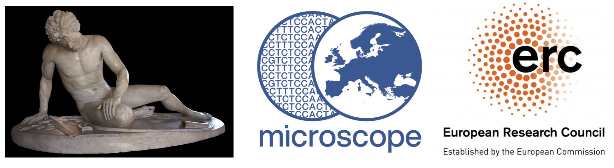
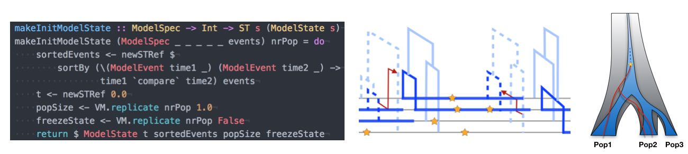
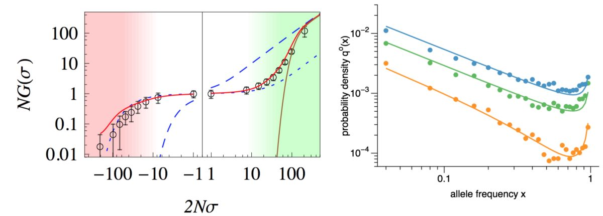

ERC Project MICROSCOPE

In recent years, archaeogenetic studies have yielded striking insights into European prehistory from ancient DNA. However, these studies focus on times prior and up to the Bronze Age, whereas more recent periods are still poorly covered. A key challenge with studying more recent time periods is the homogenisation of European populations since the late Neolithic, which exposes the limits of many existing analytical methods that try to detect population movements. To overcome these limits, in this proposal I will develop a genetic ‘microscope’, a new set of fine-scaled analytical methods based on rare genetic variation, which will allow us to analyse ancient genomic data to infer population structure with unprecedented detail. With this new toolbox, I will undertake the largest archaeogenetic investigation of the pre-Roman European Iron Age to date. A specific focus will be the ‘Celtic’ world, encompassing a core region spanning from parts of France into Slovakia, and which reached its maximum extent in the third century BC, spanning from the Iberian Peninsula to Anatolia. I will collaborate with a large number of partners from archaeology and anthropology, as well as genetic laboratories, to sample and analyse 600 skeletal remains from this region and time period. Using the new methods, I aim to investigate i) population structure during the early Iron Age in the ‘Celtic’ core region of Western and Central Europe; ii) the genetic evidence for the so-called ‘Celtic migrations’ from the third century BC, specifically by analysing samples from the Iberian Peninsula, Northern Italy, Hungary/Romania and the British isles; iii) how migration and population admixture are reflected at the community- and family level by ‘zooming in’ into selected archaeological sites to reconstruct family pedigrees. With new methodology, new reference data, and hundreds of ancient genomes from the pre-Roman Iron Age, this project will set new standards for archaeogenetic studies in Europe. [Image by Alonso de Mendoza, Wiki Commons]
Computational Methods for Genomic Analyses
 An important part of our work consists of developing new methods to analyse genomic data in order to statistically infer details about the underlying evolutionary dynamics. At the heart of this methodological work is the growing amount of data available in the field of population genomics. When in 2010 there were only a handful of high quality human genomes completely sequenced, nowadays it is thousands and growing. The information that this data carries about our past demography, population diversification, and adaptation processes is vast, in principle. However, extracting this information out of genomes requires novel methods that are both based on sound foundations of population genetic theory and efficient enough to cope with the Big Data that the field of Genetics has become. Furthermore, a relatively novel requirement of such methods is the integration of ancient DNA, which is becoming increasingly available. Important examples of methods that I have developed in recent years and which are further developed in my group include MSMC (published in Schiffels and Durbin, 2014) and rarecoal (published in Schiffels et al. 2016 and Flegontov et al. 2017). We are also very active in developing bioinformatic tools and pipelines to help with processing sequencing data from ancient DNA, for example the sequenceTools package.
Human History through genetics
 One important goal of genomic analysis is to reconstruct human history by mean of genetics. Up until a few years ago, this was an endeavour that was mostly based on modern genomic data that is became increasingly available. As a major game changer, we are now able to not only indirectly look into the past through our population genetic models based on modern data, but directly through analysing ancient DNA. This relatively new field of “Genetic history” has lead to new insights into human history from Genetics in recent years, including on migration movements between regions and continents, the separation of people into spatially separated subpopulations, as well as changes in population size. Concrete examples of our research covers continental peopling events, for example into America (see Raghavan et al. 2015 and Flegontov et al. 2017), Australia (see Malaspinas et al. 2016), the early Anglo-Saxon migrations into Britain (see Schiffels et al. 2016 and two blog posts here and here), or insights into population changes in Egypt within the last 2,000 years. Our work has also been picked up by the press, for example by the BBC or the Washington Post. [Image by Duncan Sayer]
One important goal of genomic analysis is to reconstruct human history by mean of genetics. Up until a few years ago, this was an endeavour that was mostly based on modern genomic data that is became increasingly available. As a major game changer, we are now able to not only indirectly look into the past through our population genetic models based on modern data, but directly through analysing ancient DNA. This relatively new field of “Genetic history” has lead to new insights into human history from Genetics in recent years, including on migration movements between regions and continents, the separation of people into spatially separated subpopulations, as well as changes in population size. Concrete examples of our research covers continental peopling events, for example into America (see Raghavan et al. 2015 and Flegontov et al. 2017), Australia (see Malaspinas et al. 2016), the early Anglo-Saxon migrations into Britain (see Schiffels et al. 2016 and two blog posts here and here), or insights into population changes in Egypt within the last 2,000 years. Our work has also been picked up by the press, for example by the BBC or the Washington Post. [Image by Duncan Sayer]
Population Genetic Theory
 I received my PhD from the Institute for Theoretical Physics in Cologne, and my dissertation was in population genetic theory. Since then I have worked on a number of studies that explore evolutionary dynamics of adaptation, in particular in low recombining organisms or genomic regions. Examples for such studies include the effect of clonal interference on fixation probabilities of selected mutations (see Schiffels et al. 2011), how quantitative trait equilibria affect the the segregations of mutations at a genomic level (see Nourmohammad et al. 2012), and analyses of adaptive evolution under strong linkage in natural populations of Drosophila melanogaster (Schiffels et al. 2017).